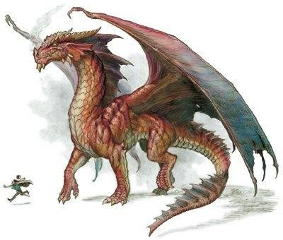
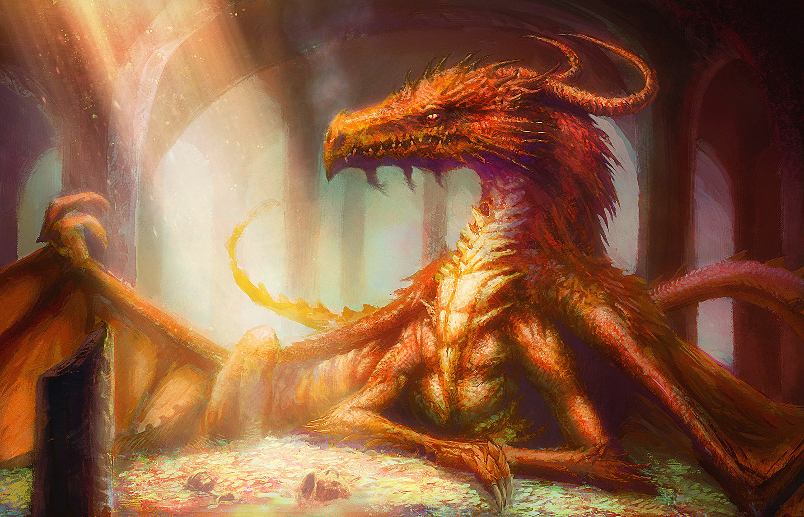

დრაკონი (ძვ. ბერძნ. δράκων [drákōn] — „გველი“), გველეშაპი, ურჩხული — მითოლოგიური საშინელი ცეცხლისმფრქვეველი და სისხლისმღვრელი არსება, რომელიც ზღვაში ან ხმელეთზე ცხოვრობდა, ჩვეულებრივ ადამიანის მსხვერპლს ითხოვდა და იცავდა რაიმე განძს (მაგ., ოქროს საწმისს არესის ჭალაში, კოლხეთში). არესის დრაკონად ითვლებოდა კადმოსის მოკლული ურჩხულიც თებეში.
დრაკონის კბილები — თებეს ციკლის თქმულებებში კადმოსის მიერ მოკლული დრაკონის კბილები, რომლებიც გმირმა დათესა, მიწიდან ამოსულ ბუმბერაზებს შეება და დახოცა, გადარჩა მხოლოდ ხუთი, რომელთა დახმარებითაც სახელოვანი ქალაქი თებე ააშენა. ამბავი მეორდება არგონავტების თქმულებაში, სადაც კბილებს იასონი თესავს არესის ველზე, კოლხიდაში.

